Craft · Product design · 2025
Etikoppaka Chess
Participatory craft-product design
A chess set designed and crafted in the style of Etikoppaka through participatory design with artisans of the Etikoppaka toy craft. A designer and artisan collaboration built on service design combined with co-design approaches.
What is in it?
- 01
Craft documentation
- 02
A chess set co-designed with the artisan
- 03
A framework for designers to design with artisans
- 04
Service design potential to enable collaboration between designer and artisan
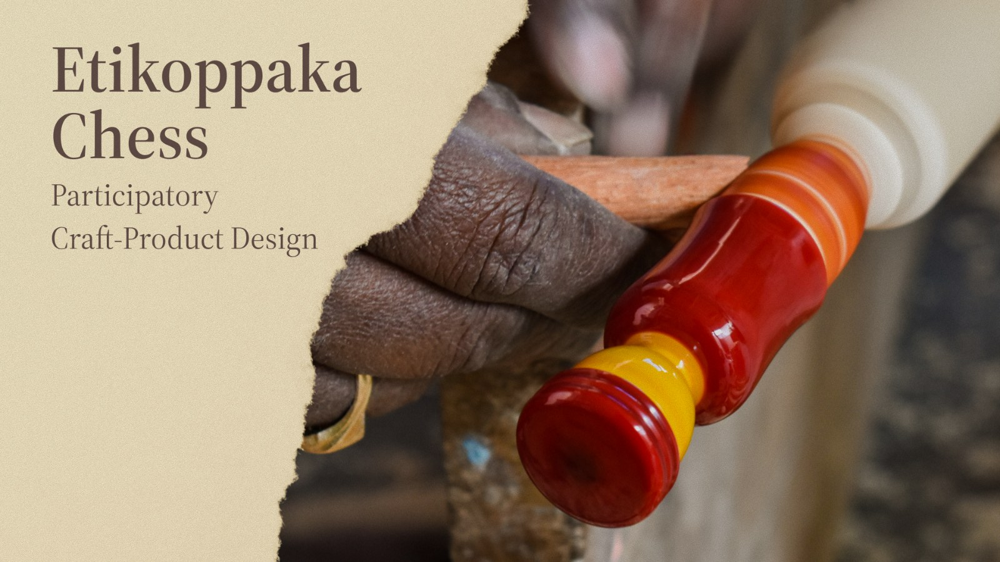
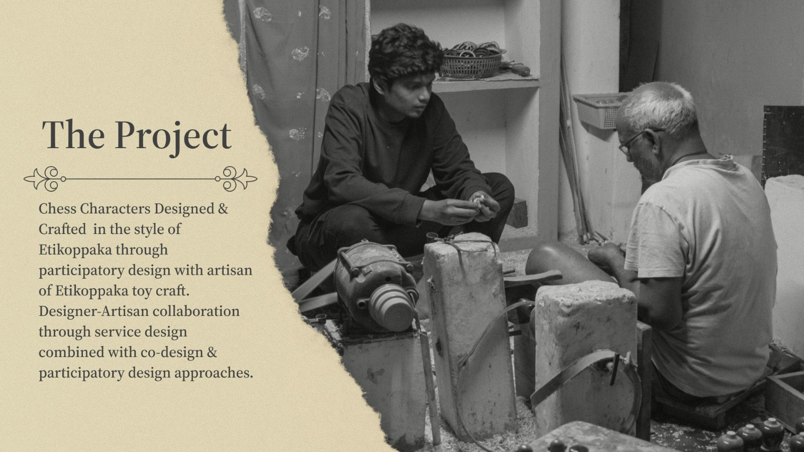
The craft
Etikoppaka is a village on the banks of the Varaha river in Visakhapatnam district, Andhra Pradesh, with more than 250 artisan families. Its toys are turned from Ankudu wood and coloured with natural dyes of turmeric, biksa seed and indigo, sealed under a lacquer polish.
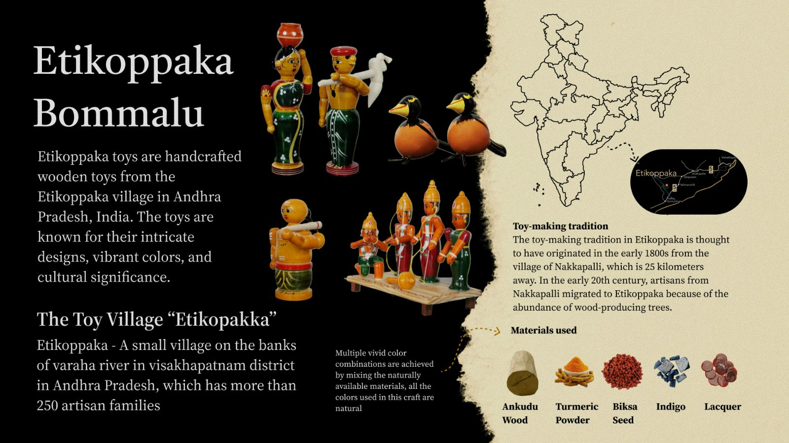
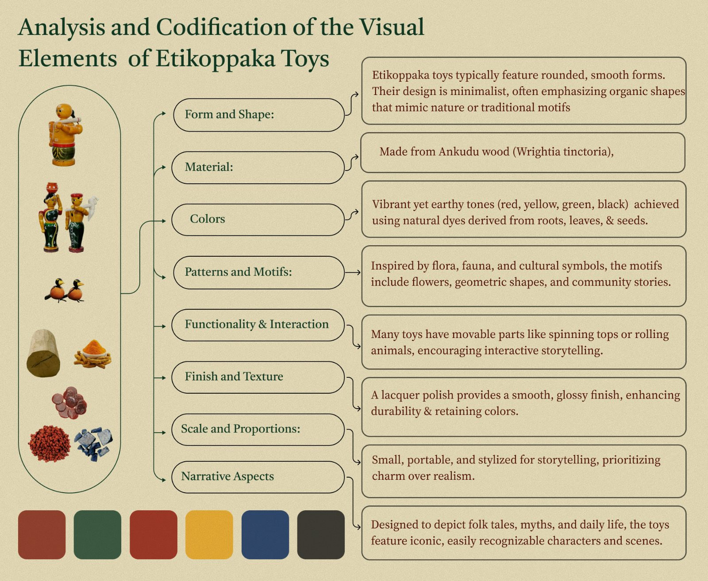
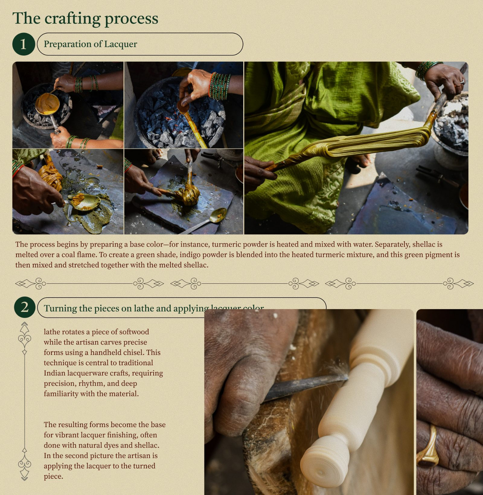
From toy craft to chess
The codified visual language became the brief: rounded, symmetrical, lathe-turnable forms in natural earthy colours, ornamented with contrasting lines and floral motifs.
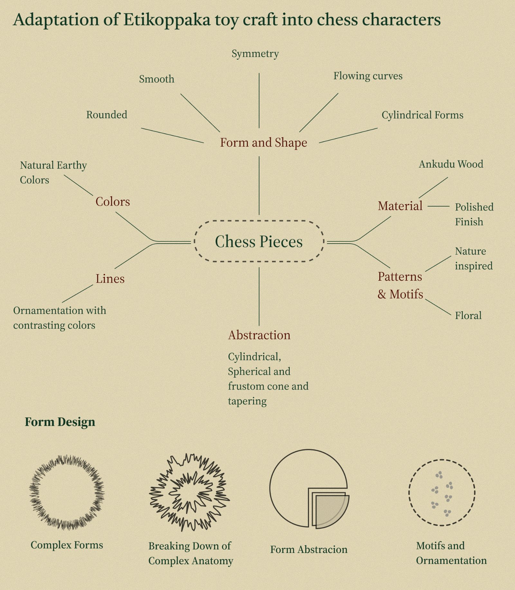
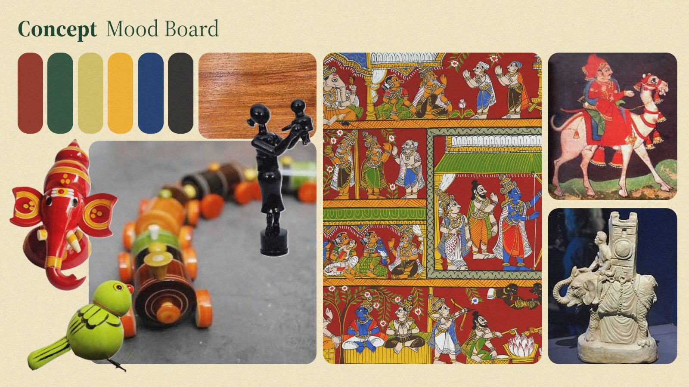
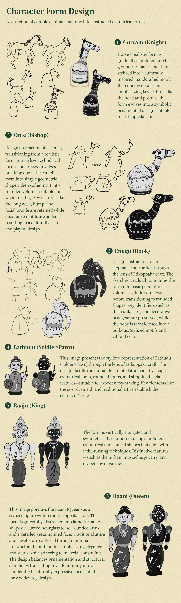
Designing with the artisan
Documenting the craft, learning it first-hand to understand its limits, then iterating the design against the artisan’s feedback rather than handing over a finished drawing.
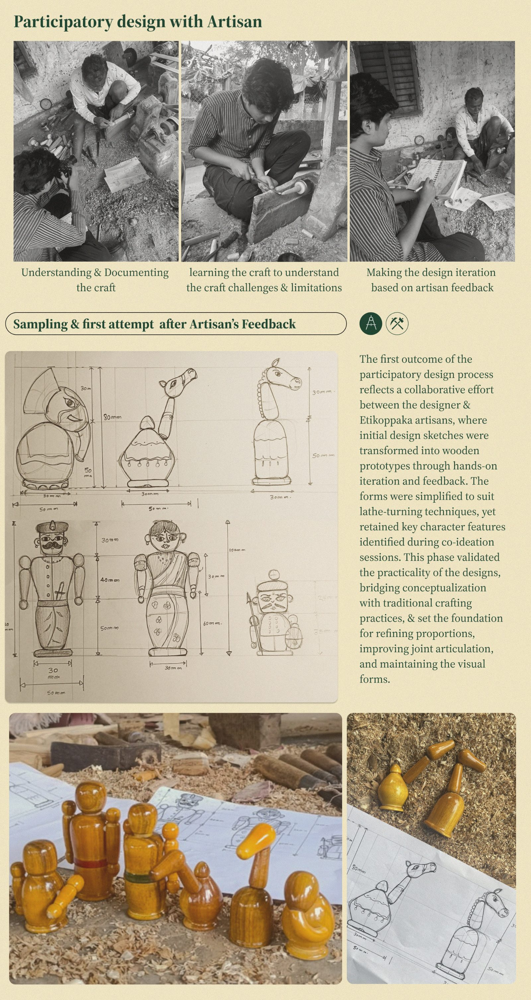
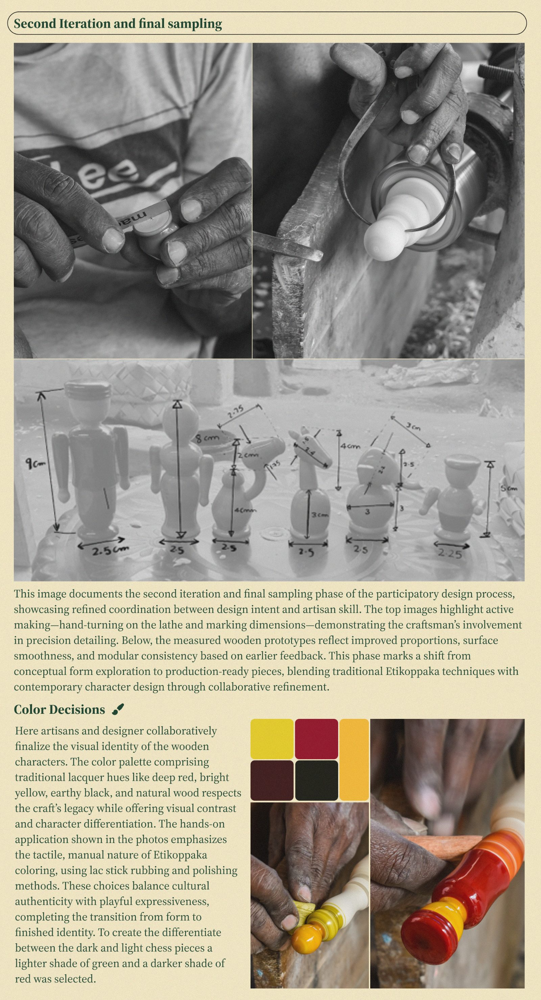
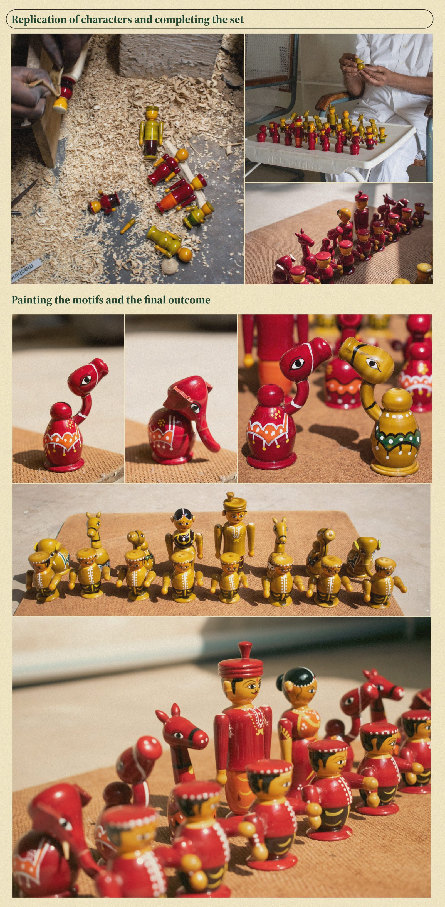
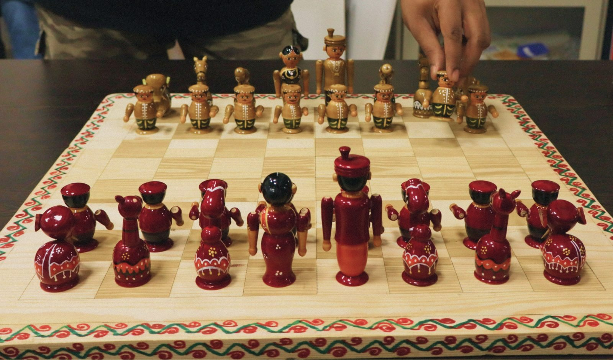
The method
The last output is not the chess set but the workflow behind it: a structured co-design process for developing contemporary character-based lacquerware with Etikoppaka techniques, so the collaboration can be repeated by other designers.
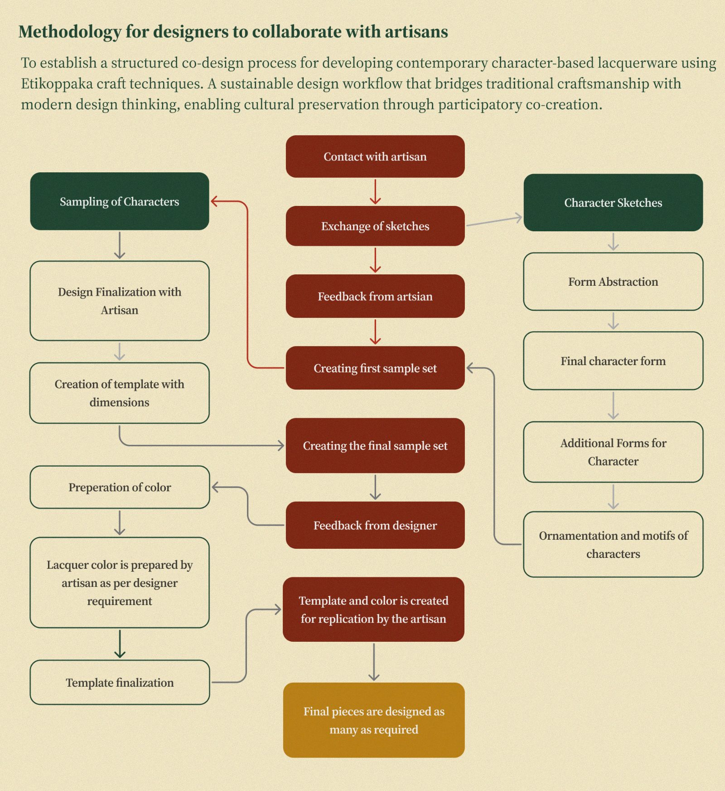